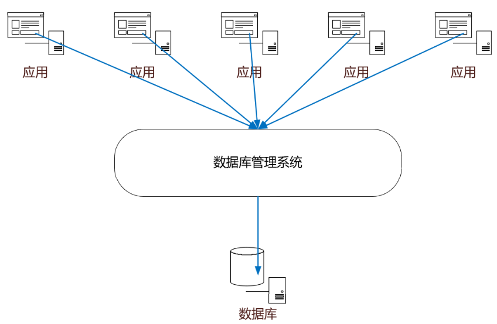
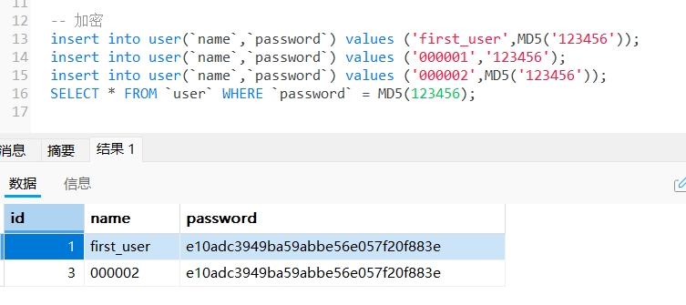
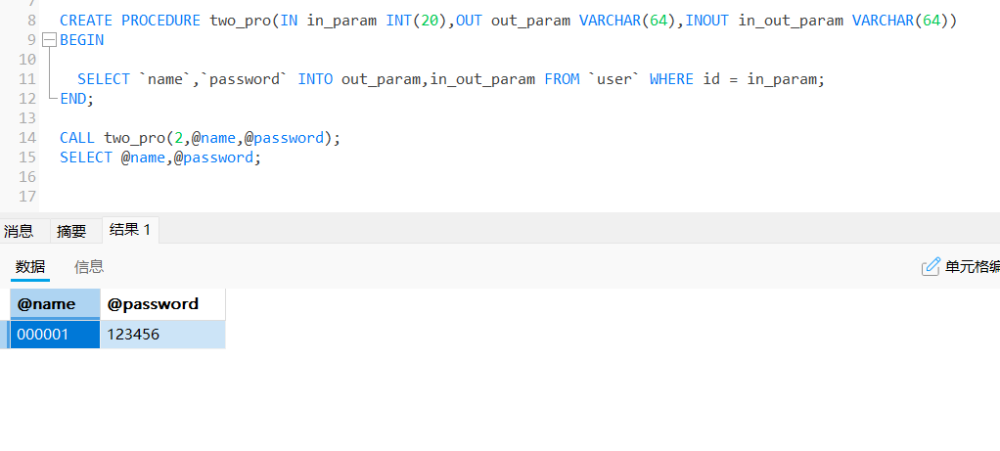

1.初识MySQL
1.1 什么是数据库
数据库（DB，DataBase）
作用：存数据，管理数据
1.2 数据库分类
关系型数据库：Excel 行、列（SQL）
- MySQL、Oracle、SqlServer、DB2、SQLlite
- 通过标和表之间，行和列之间的关系进行数据的存储
非关系型数据库：{key:value} （No SQL）
- Redis，MongDB
- 非关系型数据库：对象存储，通过对象的自身的属性来决定
DB（DataBase） 存数据
DBMS 管理和操作数据
DBMS（DataBase Manager System）数据库管理系统
MySQL ，本质是数据库管理系统

1.3 MySQL 简介
MySQL 是一个关系型数据库管理系统
安装建议：
尽量不要使用ext安装，会把一些配置中放到注册表
尽可能使用压缩包
1.4 MySQL 基础架构

从上图可以看出， MySQL 主要由下面几部分构成：
- 连接器： 身份认证和权限相关(登录 MySQL 的时候)
- 查询缓存： 执行查询语句的时候，会先查询缓存（MySQL 8.0 版本后移除，因为这个功能不太实用）
- 分析器： 没有命中缓存的话，SQL 语句就会经过分析器，对SQL进行词法分析和语法分析，确保语句正确
- 优化器： 生成执行计划，选择最佳索引，优化查询性能
- 执行器： 执行计划，然后从存储引擎返回数据。 执行语句之前会先判断是否有权限，如果没有权限的话，就会报错
- 插件式存储引擎 ： 负责存储数据，提供读写接口，确保数据安全与高效访问，采用的是插件式架构，支持 InnoDB、MyISAM、Memory 等多种存储引擎
1.5 MySQL存储引擎
- MySQL 支持多种存储引擎，通过
show engines命令来查看 MySQL 支持的所有存储引擎

MySQL 当前默认的存储引擎是 InnoDB。只有 InnoDB 是事务性存储引擎，也就是说只有 InnoDB 支持事务
MySQL 5.5.5 之前，MyISAM 是 MySQL 的默认存储引擎。5.5.5 版本之后，InnoDB 是 MySQL 的默认存储引擎
可以通过
select version()命令查看 MySQL 版本
1 | mysql> select version(); |
- 也可以通过
show variables like '%storage_engine%';命令直接查看 MySQL 当前默认的存储引擎
1 | mysql> show variables like '%storage_engine%'; |
- 使用
show table status from db_name where name='table_name';命令，用于查询特定表详细状态信息（包含表使用的存储引擎类型）


MySQL 存储引擎架构
- MySQL 存储引擎采用的是插件式架构，支持多种存储引擎
- 可以为不同的数据库表设置不同的存储引擎以适应不同场景的需要
- 存储引擎是基于表的，而不是数据库
- 可以根据 MySQL 定义的存储引擎实现标准接口来编写一个属于自己的存储引擎。这些非官方提供的存储引擎可以称为第三方存储引擎，区别于官方存储引擎。像目前最常用的 InnoDB 其实刚开始就是一个第三方存储引擎
- MySQL 官方文档也有介绍到如何编写一个自定义存储引擎，地址：https://dev.mysql.com/doc/internals/en/custom-engine.html
MyISAM 和 InnoDB 的区别
1.是否支持行级锁
MyISAM 只有表级锁(table-level locking)，而 InnoDB 支持行级锁(row-level locking)和表级锁,默认为行级锁
2.是否支持事务
MyISAM 不提供事务支持
InnoDB 提供事务支持，实现了 SQL 标准定义了四个隔离级别，具有提交(commit)和回滚(rollback)事务的能力。并且，InnoDB 默认使用的 REPEATABLE-READ（可重读）隔离级别是可以解决幻读问题发生的（基于 MVCC 和 Next-Key Lock）
3.是否支持外键
MyISAM 不支持，而 InnoDB 支持
总结：一般不建议在数据库层面使用外键的，应用层面可以解决。不过，这样会对数据的一致性造成威胁
4.是否支持数据库异常崩溃后的安全恢复
MyISAM 不支持，而 InnoDB 支持
使用 InnoDB 的数据库在异常崩溃后，数据库重新启动的时候会保证数据库恢复到崩溃前的状态。这个恢复的过程依赖于 redo log
5.是否支持 MVCC
MyISAM 不支持，而 InnoDB 支持
6.索引实现不一样
虽然 MyISAM 引擎和 InnoDB 引擎都是使用 B+Tree 作为索引结构，但是两者的实现方式不太一样
InnoDB 引擎中，其数据文件本身就是索引文件。相比 MyISAM，索引文件和数据文件是分离的，其表数据文件本身就是按 B+Tree 组织的一个索引结构，树的叶节点 data 域保存了完整的数据记录
1.6 安装MySQL
详细安装MySQL 5.7 请查看这篇博客
https://blog.csdn.net/qq_42025798/article/details/119933631
1.7 连接数据库
命令行连接
1 | mysql -uroot -p123456 |

查看所有数据库
1 | show databases; |
切换数据库
1 | use 数据库名; |
查看所有的表
1 | show tables; |
创建一个数据库
1 | create database 数据库名; |
退出连接
1 | exit; |
注释
1 | -- 单行注释（SQL 本来的注释） |
刷新权限
1 | flush privileges |
查看数据表结构
1 | DESCRIBE 表名; |
1 | DDL 数据定义语言 |
2.操作数据库
2.1 创建数据库
1、创建数据库
1 | create database [if not exists] study_db |
2、删除数据库
1 | drop database [if exists] study_db |
3、使用数据库
1 | use study_db; |
4、查看数据库
1 | show databases; |
2.2 数据库的列类型
1、数值
| 类型 | 描述 | 长度 |
|---|---|---|
| tinyint | 十分小的数据 | 1个字节 |
| smallint | 较小的数据 | 2个字节 |
| mediumint | 中等大小的数据 | 3个字节 |
| int | 标准的整数 | 4个字节 常用的 |
| bigint | 较大的数据 | 8个字节 |
| float | 单精度浮点数 | 4个字节 |
| double | 双精度浮点数 | 8个字节（精度问题） |
| decimal | 字符串形式的浮点数 | 金融计算的时候使用 |
2、字符串
| 类型 | 描述 | 长度 |
|---|---|---|
| char | 字符串固定大小的 | 0-255 |
| varchar | 可变字符串 | 0-65535 常用的变量 String |
| tinytext | 微型文本 | 2^8-1 |
| text | 文本串 | 2^16-1 保存大文本 |
3、时间日期
java.util.Date
| 类型 | 描述 |
|---|---|
| date | YYYY-MM-DD 日期格式 |
| time | HH：MM：SS 时间格式 |
| datetime | YYYY-MM-DD HH：MM：SS 最常用的时间格式 |
| timestamp | 时间戳 ，1970年1月1日到现在的毫秒数 （全球统一的） |
| year | 代表年份 |
4、null
- 没有值，未知
- 注意：不要使用NULL进行运算
2.3 数据库的字段属性
Unsigned：
- 无符号的整数
- 声明了该列不能声明为负数
zerofill：
- 0填充的
- 不足的位数，使用0 来填充，int(3) , 5—-005
自增 auto_increment：
- 通常理解为自增，自动在上一条记录的基础上+1（默认）
- 通常用来设置唯一的主键~index，必须是整数类型
- 可以自定义设置主键自增的起始值和步长
非空 NULL not null：
- 假设设置为not null，如果不给它赋值，就会报错！
- NULL，如果不填写值，默认就是null！
默认：
- 设置默认值
- sex ，默认值为 男
拓展
每一个表都必须存在以下五个字段！未来做项目用的，表示一个记录存在的意义
1 | id 主键 |


创建表
1 | -- AUTO_INCREMENT 自增 |
格式
1 | create table [if not exists] 表名( |
常用命令
1 | show create database school -- 查看创建数据库的语句 |
2.4 数据表的类型
关于数据库引擎
- INNODB 默认使用
- MYISAM
区别
| 功能 | MYISAM | INNODB |
|---|---|---|
| 事务支持 | 不支持 | 支持 |
| 数据行锁定 | 不支持（表锁） | 支持 |
| 外键约束 | 不支持 | 支持 |
| 全文索引 | 支持 | 不支持 |
| 表空间的大小 | 较小 | 较大，约为2倍 |
常规使用操作：
- MYISAM 节约空间，速度较快
- INNODB 安全性高，事务的处理，多表多用户操作
在物理空间存在的位置
- 所有的数据库文件都存在data目录下
- 本质还是文件存储！
MySQL 引擎在物理文件上的区别
- INNODB 在数据库表中只有一个 *.frm 文件，以及上级目录下的ibdata1 文件
- 以下截图是使用 INNODB 引擎创建创建表的物理文件


MYISAM 引擎在物理文件上的区别
*.frm ：表结构的定义文件
MYD ：数据文件
*.MYI ：索引文件（index）

设置数据库表的字符集编码
- 不设置的话，会是mysql默认的字符集编码
- MySQL的默认编码是latin1，不支持中文
1 | charset=utf8 |
2.5 修改和删除表
修改
1 | -- 修改表名 |
删除
1 | drop table IF EXISTS teacher1 |
注意点：
- `` 字段名，用这个包裹
- 注释 … /**/
- sql 关键字大小写不敏感，建议写小写
2.6 主键和外键
方式一
1 | create table IF NOT EXISTS grade( |
方式二
1 | -- 表创建后通过ALTER添加 |
最佳实践：
- 数据库就是单纯的表，只用来存储行和列，只有行（数据）和列（字段）
- 想使用多账表，想使用外键（程序去实现）
3.DDL
数据定义语言(用于定义和管理数据库结构对象，涵盖数据库、表、约束及索引；CREATE、ALTER、DROP )
3.1 数据库
1 | -- 创建数据库 |
3.2 表
1 | -- 建表 |
3.3 约束
- 主键约束（PRIMARY KEY）
唯一标识记录且不允许NULL值 - 唯一约束（UNIQUE）
确保字段值不重复（允许NULL值） - 非空约束（NOT NULL）
强制字段不允许为NULL - 默认约束（DEFAULT）
未指定值时自动填充默认值 - 外键约束（FOREIGN KEY）
维护表间引用完整性
1 | -- 添加主键 |
3.4 索引
主键索引 primary key
- 唯一标识，主键不可重复，只能有一个列作为主键
唯一索引 unique key
- 避免重复的列出现，唯一索引可以重复，多个列可以表示为 唯一索引
常规索引 index
- 默认的 index
全文索引 fullText
- 在特定的数据库引擎下才有，MYISAM
- 快速定位数据
组合索引
- 多字段联合建立的索引
1 | -- 创建索引 |
4.DML
数据操作语言（数据记录的增删改操作；insert、update、delete）
4.1 添加
insert
1 | -- 全字段插（需按表结构顺序填写值） |
4.2 修改
update
1 | -- 单字段修改 |
无WHERE条件会更新整表
4.3 删除
- delete
1 | -- 全表删除（避免这样写） |
- truncate 清空表
1 | -- 清空表 |
delete 和 truncate 区别
相同点：
- 都能删除数据，不会影响表结构
不同:
- truncate 重写设置自增列，计数器会归零
- truncate 不会影响事务
1 | create table test( |
5.DQL
数据查询语言（SELECT语句，用于从表中检索数据）
5.1 select 语法
1 | SELECT |
5.2 基础查询
1 | -- 查询单个字段 |
数据库的列（表达式）
数据中的表达式：文本值、列、Null、函数、计算表达式、系统变量
select 表达式 from 表
1
2
3
4
5
6
7select version() -- 查询系统版本（函数）
select 100*3-1 as 计算结果 -- 查询计算结果（表达式）
select @@AUTO_INCREMENT_INCREMENT -- 查询自增的步长（变量）
select 字段1,字段2+1 as 别名 from 表名
5.3 where 条件子句
1 | SELECT 列名 FROM 表名 WHERE 条件表达式; |
作用：检索数据中符合条件的值
搜索的条件由一个或多个表达式组成，结果布尔值
比较运算符
| 运算符 | 含义 |
|---|---|
= |
等于 |
> |
大于 |
< |
小于 |
!= 、 <> |
不等于 |
>= |
大于等于 |
<= |
小于等于 |
逻辑运算符(尽量使用英文字母)
| 运算符 | 语法 | 描述 |
|---|---|---|
| and && | a and b a && b | 逻辑与,两个为真，结果为真 |
| or || | a or b a || b | 逻辑或，其中一个为真，及结果为真 |
| not ！ | not a ! a | 逻辑非，真为假，假为真！ |
1 | -- AND：同时满足多个条件 |
模糊查询
| 运算符 | 语法 | 描述 |
|---|---|---|
| is null | a is null | 如果操作为符为null，则结果为真 |
| is not null | a is not null | 如果操作符为 not null，则结果为真 |
| between and | a betwenn b and c | 若，a在b和c之间，则结果为真 |
| like | a like b | SQL匹配，如果a匹配b，则结果为真 |
| in | a in(a1,a2,a3…) | 假设a在a1，或者a2,… 结果为真 |
1 | -- IS NULL：查询空值 |
5.4 联表查询
5.4.1 UNION与UNION ALL
- 合并查询结果，合并时，两个表对应的列数和数据类型必须相同，并且相互对应。各个SELECT语句之间使用UNION或UNION ALL关键字分隔
| 对比维度 | UNION | UNION ALL |
|---|---|---|
| 去重处理 | 自动删除重复行 | 保留所有重复行 |
| 性能表现 | 需排序去重，消耗资源多 | 直接合并，效率高 |
| 结果顺序 | 可能因去重改变顺序 | 严格保持原始查询顺序 |
| 索引利用 | 去重可能导致索引失效 | 可充分利用子查询索引 |
1 | SELECT column,... FROM table1 |
5.4.2 JOIN连接
| 连接类型 | 保留数据范围 |
|---|---|
INNER JOIN/JOIN |
仅两表匹配的交集【无匹配时处理：丢弃无匹配记录】 |
RIGHT JOIN/RIGHT OUTER Join |
右表全部 + 左表匹配部分【无匹配时处理：左表字段填 NULL】 |
LEFT JOIN/LEFT OUTER JOIN |
左表全部 + 右表匹配部分【无匹配时处理：右表字段填 NULL】 |
CROSS JOIN |
两个表的笛卡尔积，即左表的每一行与右表的每一行组合 |
FULL OUTER JOIN/FULL JOIN |
两表全部记录（MySQL 需模拟实现）【无匹配时处理：无匹配侧字段填 NULL】 |
LEFT EXCLUDING JOIN |
仅存在于左表但未匹配右表的记录（MySQL 需模拟实现） |
RIGHT EXCLUDING JOIN |
仅存在于右表但未匹配左表的记录（MySQL 需模拟实现） |
FULL EXCLUDING JOIN |
两表互不匹配的记录（左表独有 + 右表独有）（MySQL 需模拟实现） |
内连接
- 仅返回两表匹配记录（交集）
1 | -- 隐式内连接 |
外连接—右[外]连接
- 都返回右表（
RIGHT JOIN右侧的表）的所有行 - 左表无匹配时，自动填充
NULL - 完全等价于 **
RIGHT OUTER Join**
1 | -- 显式声明 OUTER |
外连接—左[外]连接
- 都返回左表（
LEFT JOIN左侧的表）的所有行 - 右表无匹配时，自动填充
NULL - 完全等价于 **
Left Outer Join**
1 | -- 省略 OUTER（推荐写法） |
交叉连接
生成两个表的笛卡尔积，即左表的每一行与右表的每一行组合
1
2
3
4
5-- 隐式交叉连接
SELECT 字段列表 FROM 表1,表2 WHERE/ON 连接条件;
-- 显示交叉连接
SELECT 字段列表 FROM 表1 CROSS JOIN 表2 WHERE/ON 连接条件;
外连接—全[外]连接
返回左表和右表的所有行
匹配成功时：合并两表对应行的数据
无匹配时：未匹配侧的字段填充为
NULL全外连接可视为
LEFT JOIN和RIGHT JOIN的并集（UNION）1
2
3
4
5
6-- 两种写法结果相同
SELECT * FROM table1
FULL JOIN table2 ON table1.id = table2.id;
SELECT * FROM table1
FULL OUTER JOIN table2 ON table1.id = table2.id;由于 MySQL 不原生支持
FULL JOIN语法，需通过LEFT JOIN + RIGHT JOIN + UNION模拟实现1
2
3
4
5
6
7-- 模拟 FULL JOIN
SELECT * FROM table1
LEFT JOIN table2 ON table1.id = table2.id
UNION
SELECT * FROM table1
RIGHT JOIN table2 ON table1.id = table2.id
WHERE table1.id IS NULL;
左排除连接
LEFT EXCLUDING JOIN用于获取仅存在于左表但未与右表匹配的记录结果集：仅包含左表中未与右表匹配的行
执行逻辑：
- 先执行普通
LEFT JOIN保留左表全部记录 - 通过
WHERE IS NULL过滤掉匹配成功的记录
1
2
3
4SELECT 左表.字段
FROM 左表
LEFT JOIN 右表 ON 连接条件
WHERE 右表.连接字段 IS NULL;- 先执行普通
右排除连接
RIGHT EXCLUDING JOIN 用于获取仅存在于右表但未与左表匹配的记录结果集：仅返回右表中未与左表匹配的行
执行逻辑：
- 先执行
RIGHT JOIN保留右表全部记录 - 通过
WHERE IS NULL过滤掉匹配成功的记录
1
2
3
4SELECT 右表.字段
FROM 左表
RIGHT JOIN 右表 ON 连接条件
WHERE 左表.连接字段 IS NULL;- 先执行
全排除连接
FULL EXCLUDING JOIN用于获取两个表中互不匹配的记录，即仅返回左表和右表中均未建立关联的数据结果集：仅包含两表中完全无关联的行
执行逻辑：
- 第一部分
LEFT JOIN + WHERE IS NULL获取左表独有记录 - 第二部分
RIGHT JOIN + WHERE IS NULL获取右表独有记录 UNION合并结果并自动去重
1
2
3
4
5
6
7
8
9SELECT 左表.字段
FROM 左表
LEFT JOIN 右表 ON 连接条件
WHERE 右表.连接字段 IS NULL;
UNION
SELECT 右表.字段
FROM 左表
RIGHT JOIN 右表 ON 连接条件
WHERE 左表.连接字段 IS NULL;- 第一部分
5.4.3 自连接
同一张表通过别名模拟成两张表进行关联查询的操作，常用于处理数据内部的层级或关联关系
1
2
3SELECT 字段列表
FROM 表名 别名A
[JOIN类型] 表名 别名B ON 别名A.字段 = 别名B.字段;
5.5 分页和排序
排序（order by）
1 | -- ASC：升序排序（默认值） |
1 | -- 排序：升序 asc 降序 desc |
分页（limit）
1 | -- 偏移量：从第几条记录开始查询（从0开始计数） |
5.6 子查询
- WHERE子句中的子查询
1 | SELECT 列名 FROM 表1 WHERE 列名 操作符 (SELECT 列名 FROM 表2 WHERE 条件); |
2.FROM子句中的子查询
1 | SELECT 列名 FROM (SELECT 列名 FROM 表名 WHERE 条件) AS 别名 WHERE 条件; |
3.SELECT子句中的子查询
1 | SELECT 列名, (SELECT 聚合函数(列名) FROM 表名 WHERE 条件) AS 别名 FROM 表名; |
5.7 分组和过滤
| 特性 | WHERE | HAVING |
|---|---|---|
| 执行时机 | 分组前过滤 | 分组后过滤 |
| 可使用聚合函数 | 否 | 是 |
| 性能影响 | 通常更高效 | 需先分组再过滤 |
- SELECT 字段限制：
GROUP BY后的字段必须出现在 SELECT 中，或为聚合函数 - NULL 值处理：分组时 NULL 会被视为同一组
1 | SELECT 列1, 列2, 聚合函数(列3) |
6.DCL
数据控制语言（管理数据库访问权限和安全；CREATE/ALTER/DROP USER、GRANT、REVOKE、COMMIT、ROLLBACK）
6.1 用户管理
1 | -- 创建用户 |
6.2 权限控制
1 | -- 授权 |
6.3 事务控制
1 | -- 提交事务 |
7.MySQL 函数
https://dev.mysql.com/doc/refman/5.7/en/built-in-function-reference.html
7.1 常用函数
数学函数
| 函数类别 | 函数名称 | 语法示例 | 功能描述 |
|---|---|---|---|
| 基本运算 | ABS(x) |
SELECT ABS(-10); |
返回x的绝对值 |
CEIL(x)/CEILING(x) |
SELECT CEIL(3.14); |
向上取整 | |
FLOOR(x) |
SELECT FLOOR(3.9); |
向下取整 | |
ROUND(x,d) |
SELECT ROUND(12.3456,2); |
四舍五入保留d位小数 | |
TRUNCATE(x,d) |
SELECT TRUNCATE(12.3456,2); |
截断小数（不四舍五入） | |
| 其他运算 | RAND() |
SELECT RAND(); |
生成0-1随机数 |
POW(x,y)/POWER(x,y) |
SELECT POW(2,3); |
计算x的y次方 | |
SIGN() |
SELECT SIGN(-10) ; |
判断一个数的符号 负数返回-1 ，正数返回1 ，0返回0 |
|
SQRT(x) |
SELECT SQRT(9); |
计算平方根 |
字符串函数
| 函数类别 | 函数名称 | 语法示例 | 功能描述 |
|---|---|---|---|
| 基本操作 | LENGTH(str) |
SELECT LENGTH('中文'); |
返回字节长度(UTF-8下中文占3字节) |
CHAR_LENGTH(str) |
SELECT CHAR_LENGTH('中文'); |
返回字符个数(中文算1个字符) | |
CONCAT(str1,str2,...) |
SELECT CONCAT('A','B'); |
字符串连接(参数为NULL时返回NULL) | |
CONCAT_WS(sep,str1,...) |
SELECT CONCAT_WS('-','A','B'); |
带分隔符连接(自动跳过NULL值) | |
| 大小写转换 | UPPER(str)/UCASE(str) |
SELECT UPPER('abc'); |
转大写 |
LOWER(str)/LCASE(str) |
SELECT LOWER('ABC'); |
转小写 | |
| 子串操作 | SUBSTR/SUBSTRING(str,pos,len) |
SELECT SUBSTRING('MySQL',2,3); |
截取子串 |
LEFT(str,len) |
SELECT LEFT('MySQL',2); |
左截取 | |
RIGHT(str,len) |
SELECT RIGHT('MySQL',3); |
右截取 | |
INSERT(str,pos,len,newstr) |
SELECT INSERT('ABCDEFG',2,3,'123') |
替换/插入子字符串 | |
INSTR(str,substr) |
SELECT INSTR('MySQL','SQL') |
查找子串位置 | |
REPLACE(str,from_str,to_str) |
SELECT REPLACE('www.mysql.com','mysql','oracle') |
替换所有匹配子串 | |
REVERSE(str) |
SELECT REVERSE('ABCD') |
反转字符串 |
流程控制函数
| 函数名称 | 语法示例 | 功能描述 |
|---|---|---|
IF(expr1,expr2,expr3) |
SELECT IF(1>0,'真','假') |
三元条件判断 |
IFNULL(expr1,expr2) |
SELECT IFNULL(NULL,'默认值') |
空值替换 |
NULLIF(expr1,expr2) |
SELECT NULLIF(1,1) |
相等判断 |
时间和日期函数
| 函数名称 | 示例 | 功能描述 |
|---|---|---|
NOW()/CURRENT_TIMESTAMP()/LOCALTIME() |
SELECT NOW() |
返回当前日期时间 |
CURDATE()/CURRENT_DATE() |
SELECT CURDATE() |
返回当前日期 |
CURTIME()/CURRENT_TIME() |
SELECT CURTIME() |
返回当前时间 |
- NOW() 获取SQL语句开始执行的时间点
- SYSDATE() 获取函数实际执行时刻的时间点
系统
| 函数名称 | 语法示例 | 功能描述 |
|---|---|---|
VERSION() |
SELECT VERSION() |
返回MySQL服务器版本 |
DATABASE() |
SELECT DATABASE() |
返回当前数据库名 |
USER() |
SELECT USER() |
返回当前用户名和主机 |
7.2 聚合函数
| 名称 | 描述 |
|---|---|
COUNT() |
计数 |
SUM() |
求和 |
AVG() |
求平均值 |
MAX() |
求最大值 |
MIN() |
求最小值 |
1 | -- 都能统计表中的记录（想查询一个表中有多少条记录就用count） |
7.3 数据库级别的MD5加密
- 不可逆加密，无法通过函数直接解密
- 相同输入始终产生相同输出
1 | -- 普通新增语句（明文密码） |

- 若需可逆加密，使用
AES_ENCRYPT()/AES_DECRYPT()组合
8.权限管理和和备份
8.1 用户管理

mysql.user表操作
1 | -- 创建用户 |
8.2 MySQL备份
MySQL数据库备份的方式
1.直接拷贝物理文件

2.在Navicat 等可视化工具中手动导出

3.使用命令行 mysqldump
导出
1
2
3
4
5-- 语法：mysqldump -h主机 -u用户名 -p密码 数据库名 表1 > 导出的位置/文件名
-- 语法：mysqldump -h主机 -u用户名 -p密码 数据库名 表1 表2 > 导出的位置/文件名
-- 语法：mysqldump -h主机 -u用户名 -p密码 数据库名 > 导出的位置/文件名
C:\WINDOWS\system32>mysqldump -hlocalhost -uroot -p123456 school student >D:/q.sql导入
1
source D:/q.sql
9.视图
- 基于SQL查询生成的虚拟表，不存储实际数据，而是动态引用基础表数据
- 向视图提供数据内容的语句为 SELECT 语句, 可以将视图理解为存储起来的 SELECT 语句
- 视图的创建和删除只影响视图本身，不影响对应的数据表
9.1 创建视图
- 在 SQL 查询语句的基础上封装了视图 VIEW，这样就会基于 SQL 语句的结果集形 成一张虚拟表
- 创建视图时，没有在视图名后面指定字段列表，则视图中字段列表默认和SELECT语句中的字段列表一致。如果SELECT语句中给字段取了别名，那么视图中的字段名和别名相同
- 视图字段名最终由显式定义 > SELECT别名 > SELECT 原始列名的优先级决定，即没有显示定义则继承SELECT查询结果的别名或列名
- 显式指定的视图字段数量需与
SELECT查询列数严格一致，否则报错 - 可以基于视图创建视图
1 | CREATE [OR REPLACE] |
9.2 查看视图
1 | -- 显示创建语句 |
9.3 更新视图
- 使用
INSERT、UPDATE和DELETE语句对视图中的数据进行插入、更新和删除操作时，数据表中的数据会相应地发生变化；反之亦然 - 视图作为虚拟表 ，主要用于方便查询 ，不建议更新视图的数据
- 对视图数据的更改，可以通过对实际数据表里数据的操作来完成
视图可更新需满足条件
单表基础：视图必须基于单个基础表，不包含多表连接操作
查询结构简单：
- 不含聚合函数（如
SUM、COUNT） - 不含
DISTINCT、GROUP BY、HAVING - 不含
UNION或子查询
- 不含聚合函数（如
字段要求：
- 必须包含基础表的主键或唯一索引列
- 不含计算字段（如
CONCAT()或数学运算结果）
不可更新的视图
| 场景 | 原因 |
|---|---|
| 多表连接 | 涉及多个表时无法确定具体修改的目标表 |
| 聚合函数 | 如SUM()、AVG()导致无法反向映射到基础表数据 |
| 分组/去重 | GROUP BY、DISTINCT破坏视图行与基础表行的唯一对应关系 |
| 复杂操作 | 包含UNION、子查询或计算列 |
| 关键字段缺失 | 未包含基础表主键或唯一约束列 |
待补充
9.4 修改、删除视图
修改视图
1 | -- 方式一 |
删除视图
删除视图只是删除视图的定义，并不会删除数据库表的数据
基于视图a、b创建了新的视图c，如果将视图a或者视图b删除，会导致视图c的查询失败。这样的视图c需要手动删除或修改，否则影响使用
1
DROP VIEW [IF EXISTS] 视图名称;
10.存储过程
- 是一组预编译的SQL语句集合，可以实现特定功能并存储在数据库中
特点
- 代码封装和复用：将常用SQL操作封装成模块，避免重复编写
- 支持输入/输出参数：可以接收参数并返回结果
- 支持变量声明和流程控制：包含循环、分支等编程结构
- 执行效率高：首次执行后编译结果会被缓存
优势
- 性能优势：存储过程在网络数据库服务器环境中使用，减少网络通信开销
- 安全性：可以对数据设置访问限制，比直接执行SQL更安全
- 模块化：实现复杂业务逻辑的封装，应用程序只需调用即可
- 代码复用：一次编写多处使用，减少代码冗余
10.1 创建存储过程
语法
1 | CREATE PROCEDURE 存储过程名([IN|OUT|INOUT] 参数名 参数类型 [DEFAULT 默认值],...) |
- IN：输入参数（默认），如果没有定义，默认就是 IN
- OUT：输出参数
- INOUT：既可输入又可输出
- 参数类型：形参类型可以是MySQL数据库中的任意类型
characteristics表示创建存储过程时指定的对存储过程的约束条件- BEGIN…END 中间可以包含多条语句，每条个语句都以（;）号为结束符
- BEGIN…END 中间如果只包含一条语句，则可以省略 BEGIN 和 END
结束标记
MySQL默认的语句结束符号为分号‘;’。为了避免与存储过程中SQL语句结束符相冲突，需要使用
DELIMITER改变存储过程的结束符存储过程定义完毕之后再使用
DELIMITER ;恢复默认结束符1
2
3
4
5
6
7DELIMITER $
CREATE PROCEDURE 存储过程名(IN|OUT|INOUT 参数名 参数类型,...)
[characteristics ...]
BEGIN
-- SQL语句
END;
DELIMITER;
变量声明和赋值
DECLARE语句用于在存储过程或函数的BEGIN...END块中声明局部变量，这些变量只在当前存储过程或函数中有效DECLARE语句必须出现在BEGIN...END块的开头部分，且在所有可执行语句之前1
DECLARE 变量名 数据类型 [DEFAULT 默认值];
SET语句用于给已声明的变量赋值，可以赋常量或表达式的结果1
SET 变量名 = 值/表达式;
SELECT...INTO语句用于将查询结果直接赋值给变量，通常用于从数据库表中获取数据并存储到变量中，列名和变量名数量一致1
SELECT 列名 INTO 变量名 FROM 表名 WHERE 条件;
10.2 调用存储过程
调用MySQL存储过程的基本语法是使用
CALL语句1
CALL 存储过程名([实参列表])
无参数存储过程调用
1 | -- 创建无参存储过程 |
混合参数调用
1 | -- 创建混合参数存储过程 |

10.3 查看、修改和删除
查看
1 | -- 查看所有存储过程列表（显示数据库中的所有存储过程及其基本信息，包括名称、创建时间） |
修改
1 | ALTER PROCEDURE 存储过程名 |
可修改的特征
注释信息
COMMENT '新描述'更新存储过程的说明文本数据访问特性
修改SQL执行权限范围
安全上下文
SQL SECURITY {DEFINER | INVOKER}切换执行权限验证方式确定性声明
{DETERMINISTIC | NOT DETERMINISTIC}标记结果是否确定调试模式
{ALLOW DEBUG MODE | DISABLE DEBUG MODE}控制调试支持
不可修改的内容
过程主体代码（需通过
CREATE OR REPLACE重建）参数列表（必须删除后重建）
返回结果集数量（
DYNAMIC RESULT SETS需重建）
1 | -- 先删除后重建 |
删除
1 | DROP PROCEDURE IF EXISTS 存储过程名; |
11.存储函数
- 必须返回单个值的预编译SQL单元，可在SQL语句中直接调用
特点
- 强制返回值：必须通过
RETURN语句返回单个明确类型的值，不可省略返回值定义 - 参数限制：仅支持
IN类型输入参数，无法修改外部变量值 - 嵌入式调用：可直接嵌入SQL语句中使用（如
SELECT func()） - 预编译缓存：一次编译后缓存执行计划，重复调用时直接命中
优势
- 简化复杂计算：封装业务逻辑（如税率计算），降低SQL复杂度
- 减少网络交互：客户端只需发送函数调用而非完整SQL语句
- 提升代码复用：避免重复编写相同逻辑，统一维护计算规则
- 执行效率优化：译缓存机制显著降低重复计算的资源消耗
11.1 创建存储函数
1 | DELIMITER // |
characteristics表示创建存储过程时指定的对存储过程的约束条件，与存储过程相同- BEGIN…END 中间可以包含多条语句，每条个语句都以（;）号为结束符
- BEGIN…END 中间如果只包含一条语句，则可以省略 BEGIN 和 END
- 参数只能是输入参数(IN类型)
- RETURNS 返回数据类型：必写，指定函数的返回类型，而且函数体必须包含一个 RETURN 返回值 语句
11.2 调用存储函数
在MySQL中，存储函数的使用方法与MySQL内部函数的使用方法是一样的
1
SELECT 函数名(实参列表)
在SELECT语句中直接调用
1 | SELECT 函数名(参数1, 参数2, ...) [AS 别名]; |
在WHERE条件中使用
1 | SELECT * FROM 表名 WHERE 函数名(字段) > 值; |
在SET语句中赋值给变量
1 | SET @变量名 = 函数名(参数); |
在UPDATE语句中使用
1 | UPDATE 表名 SET 字段 = 函数名(参数) WHERE 条件; |
在INSERT语句中使用
1 | INSERT INTO 表名(字段) VALUES(函数名(参数)); |
在存储过程或函数中调用
1 | CREATE PROCEDURE 过程名() |
11.3 查看、修改和删除
查看
1 | -- 查看所有存储函数列表（显示数据库中的所有存储函数及其基本信息，包括名称、创建时间） |
修改
1 | ALTER FUNCTION 存储函数名 |
可修改的特征
注释信息
COMMENT '新描述'更新存储函数的说明文本数据访问特性
修改SQL执行权限范围
安全上下文
SQL SECURITY {DEFINER | INVOKER}切换执行权限验证方式确定性声明
{DETERMINISTIC | NOT DETERMINISTIC}标记结果是否确定调试模式
{ALLOW DEBUG MODE | DISABLE DEBUG MODE}控制调试支持
不可修改的内容
过程主体代码（需通过
CREATE OR REPLACE重建）参数列表（必须删除后重建）
返回结果集数量（
DYNAMIC RESULT SETS需重建）
1 | -- 先删除后重建 |
删除
1 | DROP FUNCTION IF EXISTS 函数名; |
12.变量
在 MySQL 数据库中，变量分为 系统变量 、 用户自定义变量 和局部变量
系统变量又分为全局变量和会话变量
变量类型 作用域 声明方式 生命周期 全局变量 整个MySQL服务器实例 配置文件或 SET GLOBAL重启失效（MySQL 8.0支持持久化） 会话变量 当前连接会话 SET SESSION会话结束销毁 用户定义变量（@） 当前连接会话 SET @var = ...会话结束销毁 局部变量 存储程序块内 DECLARE程序块执行结束销毁
12.1 系统变量
全局变量
1 | SET GLOBAL max_connections = 500; -- 设置全局变量 |
会话变量
1 | SET SESSION sql_mode = 'STRICT_TRANS_TABLES'; -- 设置会话变量 |
MySQL 中的系统变量以 两个“@” 开头
@@global仅用于标记全局系统变量@@session仅用于标记会话系统变量@@首先标记会话系统变量，如果会话系统变量不存在，则标记全局系统变量1
2
3
4
5
6
7#查看指定的系统变量的值
SELECT @@global.变量名;
#查看指定的会话变量的值
SELECT @@session.变量名;
#或者
SELECT @@变量名;
12.2 用户自定义变量
由用户自定义，以
@开头，仅在当前会话有效1
2SET @user_var = 10; -- 直接赋值
SELECT @total := COUNT(*) FROM table; -- 查询结果赋值无需声明，直接赋值使用
不区分大小写（
@var与@VAR等价）会话结束自动销毁
12.3 局部变量
在存储程序（存储过程、函数、触发器）中定义，作用域仅限于声明它们的程序块
1
DECLARE 变量名 数据类型 [DEFAULT 默认值];
必须用
DECLARE在程序块开头声明作用域仅限于所在的
BEGIN...END块常用于临时存储计算结果或控制流程
程序执行结束即销毁
13.流程控制
- 流程控制语句通常只能在存储程序（存储过程、函数、触发器）内部使用
- 条件判断语句 ：if 语句和 case 语句
- 循环语句 ：loop、while 和 repeat 语句
- 跳转语句 ：iterate 和 leave 语句
13.1 分支结构
13.1.1 if语句
- MySQL的
IF语句有两种主要形式：函数形式（用于查询）和流程控制形式（用于存储过程、函数或触发器）
ifl流程控制语句
1 | IF condition THEN |
if函数
1 | IF(condition, value_if_true, value_if_false) |
13.1.2 case语句
- ELSE子句：若省略且无匹配项，返回NULL
- 执行顺序：CASE语句按WHEN子句顺序执行，匹配成功后忽略后续条件
- NULL处理：需使用
IS NULL判断，直接WHEN NULL会失效
简单CASE表达式
直接比较列或表达式与WHEN子句的值是否相等
1
2
3
4
5
6CASE 列名/表达式
WHEN 值1 THEN 结果1
WHEN 值2 THEN 结果2
...
ELSE 默认结果
END
搜索CASE表达式
每个WHEN子句可包含独立的布尔表达式
1
2
3
4
5
6CASE
WHEN 条件1 THEN 结果1
WHEN 条件2 THEN 结果2
...
ELSE 默认结果
END
13.2 循环结构
| 特性 | REPEAT | WHILE | LOOP |
|---|---|---|---|
| 检查时机 | 循环结束后 | 循环开始前 | 需显式LEAVE |
| 最少执行次数 | 1次 | 0次 | 1次 |
| 适用场景 | 至少执行一次 | 条件明确循环 | 复杂中断逻辑 |
13.2.1 loop语句
- 必须通过
LEAVE语句显式退出，否则会形成死循环 - 支持使用标签（
begin_label）标记循环范围，便于嵌套时精准控制 - 循环体内可包含任意有效的SQL语句
1 | [begin_label:] LOOP |
13.2.2 while语句
- 先检查条件后执行循环体，条件为
TRUE时继续执行 - 需通过变量修改使条件最终变为
FALSE，否则会无限循环
1 | [begin_label:] WHILE 条件表达式 DO |
13.2.3 repeat语句
- 循环体至少执行一次，执行后检查
UNTIL后的条件表达式 - 条件为
TRUE时退出循环，为FALSE时继续执行 - 支持使用标签（
begin_label）标记循环范围，便于嵌套控制
1 | [begin_label:] REPEAT |
13.3 跳转结构
| 特性 | ITERATE | LEAVE |
|---|---|---|
| 作用 | 跳过当前迭代 | 完全退出循环 |
| 类比 | 类似continue |
类似break |
| 执行后 | 继续下一次循环 | 执行循环后代码 |
| 适用场景 | 需要过滤特定条件迭代 | 满足终止条件时退出 |
13.3.1 iterate语句
跳过当前循环体剩余代码，直接开始下一次循环迭代（类似其他语言的
continue）仅能在带标签的
LOOP、REPEAT、WHILE循环结构内使用必须与预定义的循环标签配合使用，且需确保循环内有终止条件避免死循环
1
ITERATE 循环标签;
13.3.2 leave语句
立即终止当前循环/块，跳转到标签后的代码继续执行（类似其他语言的
break）仅能在带标签的
LOOP、REPEAT、WHILE循环结构内使用必须与预定义的循环标签配合使用，且需确保循环内有终止条件避免死循环
1
LEAVE 标签名;
13.4 查询中的流程控制函数
| 函数 | 语法结构 | 核心逻辑 |
|---|---|---|
IF() |
IF(cond,val_true,val_false) |
条件cond为真时返回val_true，否则返回val_false |
IFNULL() |
IFNULL(expr1,expr2) |
expr1为NULL时返回expr2，否则返回expr1 |
NULLIF() |
NULLIF(expr1,expr2) |
expr1=expr2时返回NULL，否则返回expr1 |
ISNULL() |
ISNULL(expr) |
检测expr是否为NULL（是则返回1，否则返回0） |
IF
1 | -- 三元判断结构 |
- 参数说明：
expr1：判断条件（返回TRUE/FALSE/NULL）expr2：条件为真时的返回值expr3：条件为假时的返回值
- 返回值规则：
- 当
expr1为TRUE（非0且非NULL）时返回expr2 - 当
expr1为FALSE或NULL时返回expr3
- 当
IFNULL
1 | -- 空值处理 |
- 参数说明：
expr1：待检测的表达式expr2：expr1为NULL时的替代值
- 返回值规则：
- 若
expr1非NULL → 返回expr1原值 - 若
expr1为NULL → 返回expr2
- 若
NULLIF
1 | -- 等值返回NULL |
- 参数说明：
expr1：待比较的第一个表达式expr2：待比较的第二个表达式
- 返回值规则：
- 若
expr1 = expr2→ 返回NULL - 若
expr1 ≠ expr2→ 返回expr1的原值
- 若
ISNULL
1 | -- 空值检测 |
- 参数：任意表达式（字段、计算值等）
- 返回值：
1：当表达式为NULL时0：当表达式非NULL时
13.5 查询中的case语句
简单CASE形式（值匹配）
1 | SELECT |
搜索CASE形式（条件判断）
1 | SELECT |
14.游标
- 游标是结果集的指针，实现逐行处理数据
- 适用场景：存储过程/函数中处理多行数据
14.1 游标使用的步骤
1.声明游标
1 | -- 必须在变量和条件声明之后、处理程序之前声明 |
2.打开游标
1 | OPEN cursor_name; |
3.使用游标（从游标中逐行获取数据）
1 | -- var1[,var2] ...必须在声明游标之前就定义好 |
循环控制：需配合
CONTINUE HANDLER处理结束标志1
2DECLARE done INT DEFAULT 0;
DECLARE CONTINUE HANDLER FOR NOT FOUND SET done = 1;
4.关闭游标
1 | CLOSE cursor_name; |
14.2 完整流程示例
1 | CREATE TABLE `scores` ( |
15.触发器
- 嵌入MySQL的一段程序，由INSERT/UPDATE/DELETE事件触发执行，无需手动调用
- 本质：特殊的存储过程，但通过表事件触发而非CALL调用
| 特性 | 说明 |
|---|---|
| 触发时机 | BEFORE（操作前执行）或AFTER（操作后执行） |
| 触发事件 | INSERT/UPDATE/DELETE |
| 行级触发 | 每行数据变更都会激活触发器（MySQL仅支持行级触发） |
| 永久表限制 | 只能创建在永久表上，不支持临时表和视图 |
创建触发器
1 | CREATE TRIGGER 触发器名称 |
- 说明
- 表名：表示触发器监控的对象
- BEFORE|AFTER ：表示触发的时间，BEFORE 表示在事件之前触发；AFTER 表示在事件之后触发
- INSERT|UPDATE|DELETE ：表示触发的事件
- 1）INSERT 表示插入记录时触发
- 2）UPDATE 表示更新记录时触发
- 3）DELETE 表示删除记录时触发
- 触发器执行的语句块 ：可以是单条SQL语句，也可以是由BEGIN…END结构组成的复合语句块
查看
1 | -- 查看现有触发器 |
修改
1 | -- 先删除再新增 |
删除
1 | DROP TRIGGER [IF EXISTS] 触发器名称; |